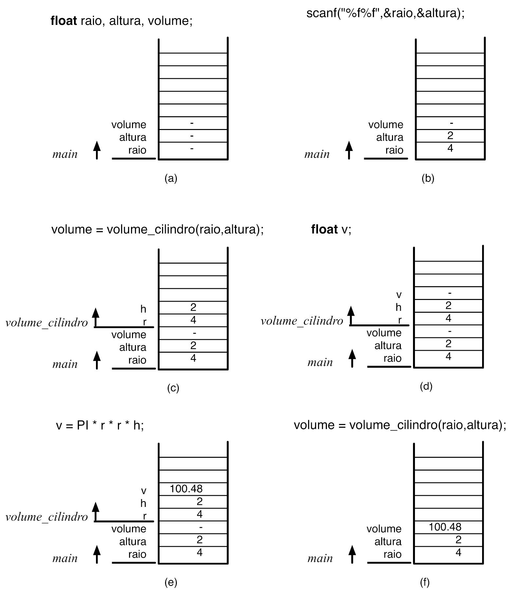
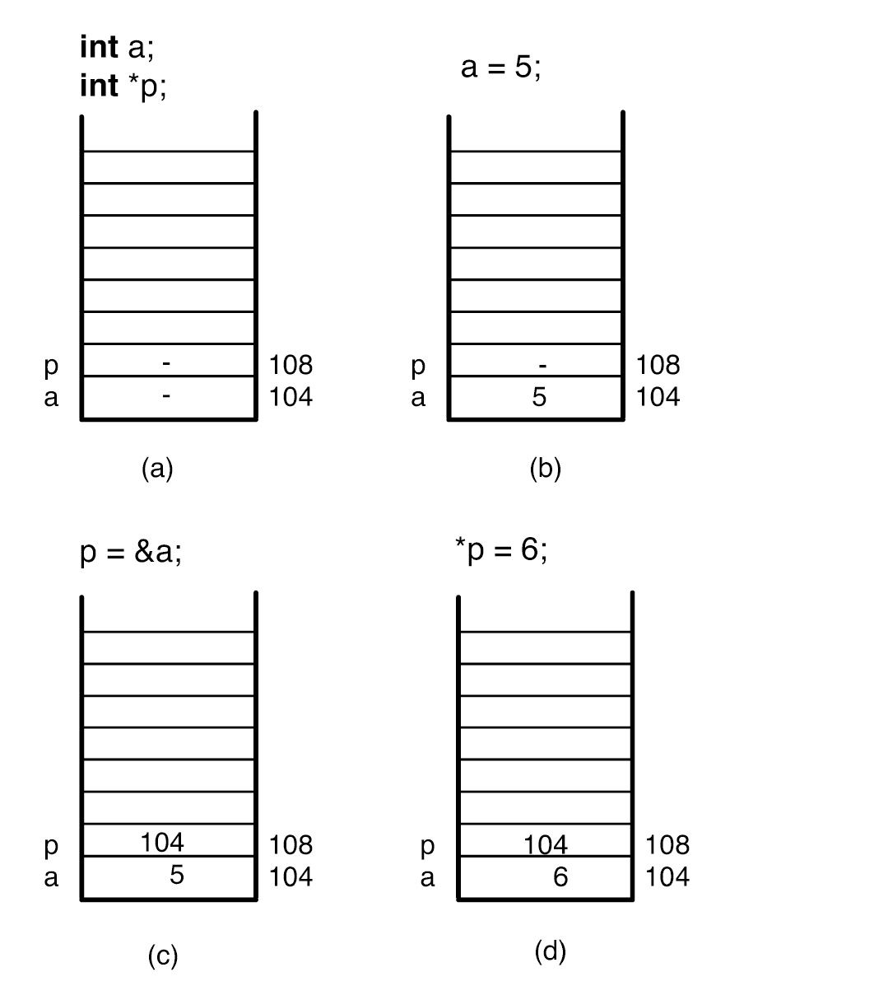
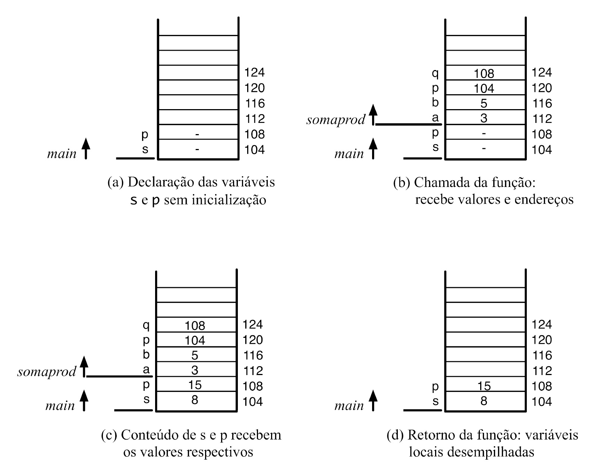
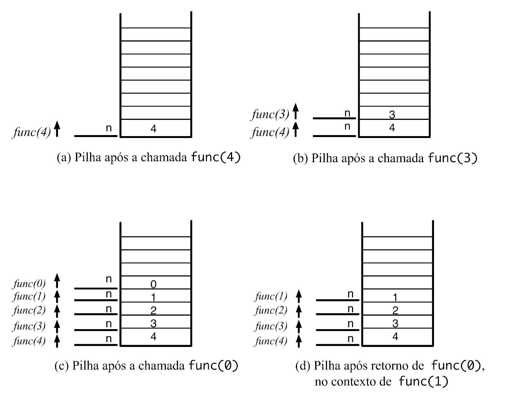

Como dividir um programa em blocos reutilizáveis — e como uma função pode alterar diretamente as variáveis de quem a chamou.
Parâmetros entram por cópia; o return devolve um único valor a quem chamou.
Parâmetros e variáveis locais vivem numa região de memória que desaparece quando a função retorna.

& obtém o endereço de uma variável; * acessa — ou altera — o valor guardado nele.

Uma função só altera o que recebeu por endereço — nunca uma cópia.
Recebe uma cópia de num — alterar essa cópia não muda o original.
Recebe o endereço de num — escreve através de *ptr na variável original.
Recebendo os endereços de sum e difference, a função escreve os dois resultados diretamente neles.

Nasce e morre a cada chamada da função — some quando ela retorna.
vida: 1 chamadaInicializada uma única vez; preserva o valor entre chamadas, mas continua visível só ali.
vida: todo o programaExiste do início ao fim do programa, visível — e alterável — por qualquer função.
vida: todo o programaCada chamada recursiva empilha sua própria moldura — até um caso-base interromper a cadeia.

#define não é uma função — não existe chamada, parâmetro ou retorno de verdade.
Código-fonte, explicação linha a linha e simulação da execução passo a passo — sem precisar compilar nada. Depois, teste o que aprendeu no quiz.